Iron's Spells 'n Spellbooks
共 261 个条目 · irons_spellbooks
版本: 1.21.1-3.16.2 · 来源: irons_spellbooks-1.21.1-3.16.2.jar
A magic mod for Minecraft returning to the classic RPG spellcasting fantasy.
官方介绍 （Modrinth · 中文版由 GLM AI 翻译，仅供参考）
Iron's Spells 'n Spellbooks（铁魔法与魔咒书）为游戏带来经典的 RPG 施法幻想：与危险的巫师战斗、攻略大量建筑、深入地牢、收集资源与法术，寻找强大的魔法神器！
特色：
- 超过 100 种可升级法术
- 2 个会施法的 Boss
- 9 种会施法的敌人/盟友/商人
- 12 套法师盔甲
- 11 个随机生成的建筑
- 武器灌注与盔甲升级系统
- 丰富的配置选项（包括每个法术的单独设置）
- 与 JEI、JEED、Apotheosis、Tetra、Better Combat、Patchouli 等模组原生兼容！
- 以及更多内容！
常见问题：
问：我该如何上手 Spells 'n Spellbooks？
答：https://www.iron.wiki/progression/
问：会移植到 1.20.1（或其他版本/模组加载器）吗？
答：长话短说：不会。这些模组是业余爱好项目，为单个版本开发需要投入数月的个人精力。不过它们是开源的，欢迎社区贡献：https://github.com/iron431/。在 Patreon 上可以提前体验（https://www.patreon.com/Iron431）
问：我的模型显示异常/无法渲染
答：如果你装了 OptiFine，那就是元凶。OptiFine 只适用于原版客户端，请改用众多与 Forge 兼容的替代品（例如 Oculus）
开发者：
支持：
由 GLM AI 翻译，仅供参考
查看英文原文（Modrinth）
Iron's Spells 'n Spellbooks introduces the classic RPG spellcasting fantasy to the game. Fight dangerous wizards, raid a plethora of structures, delve through dungeons, collect resources and spells, and find powerful magical artifacts!
Featuring:
- Over 100 upgradable spells
- 2 Spellcasting Bosses
- 9 Spellcasting Enemies/Allies/Merchants
- 12 wizard armor sets
- 11 randomly generated structures
- Weapon Imbuement and Armor Upgrade Systems
- Extensive configuration options (including per-spell settings)
- Native compatibility with JEI, JEED, Apotheosis, Tetra, Better Combat, Patchouli, and others!
- And much more!
FAQ:
Q: How do I get started with Spells 'n Spellbooks?
A: https://www.iron.wiki/progression/
Q: Will there be a port to 1.20.1 (or any other versions/modloader)
A: TLDR: No. These mods are a hobby project and development for a single version takes months of personal commitment. However, they are open-source and open to community contributions: https://github.com/iron431/. Early access is available on Patreon (https://www.patreon.com/Iron431)
Q: My Models are are broken/won’t render
A: If you have Optifine, it’s that. Optifine is meant for vanilla clients. Use the many alternatives (such as Oculus) that work with forge
For Developers:
Support:
物品与方块
irons_spellbooks:affinity_ring · 物品?炼金术贸易路线
irons_spellbooks:alchemical_trade_route · 物品
 炼金锅
炼金锅irons_spellbooks:alchemist_cauldron · 方块?紫晶刺剑
irons_spellbooks:amethyst_rapier · 物品
 紫水晶共鸣护符
紫水晶共鸣护符irons_spellbooks:amethyst_resonance_charm · 物品?军团前哨
irons_spellbooks:ancient_battleground_map · 物品
 远古知识碎片
远古知识碎片irons_spellbooks:ancient_knowledge_fragment · 物品?古代指南针
irons_spellbooks:antiquated_compass · 物品?一股魔法之力与此指南针共鸣，它的指针死死地指向了…某种东西。
irons_spellbooks:antiquated_compass_desc · 物品
 药剂师刷怪蛋
药剂师刷怪蛋irons_spellbooks:apothecarist_spawn_egg · 物品
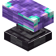
奥术铁砧irons_spellbooks:arcane_anvil · 方块
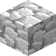
奥术残骸irons_spellbooks:arcane_debris · 方块
 奥术源质
奥术源质irons_spellbooks:arcane_essence · 物品
 奥术锭
奥术锭irons_spellbooks:arcane_ingot · 物品奥术符文
irons_spellbooks:arcane_rune · 物品奥术残骸碎片
irons_spellbooks:arcane_salvage · 物品?这种被遗忘的金属仍旧散发着微弱的魔法能量。
irons_spellbooks:arcane_salvage_desc · 物品高位唤魔者靴子
irons_spellbooks:archevoker_boots · 物品高位唤魔者战袍
irons_spellbooks:archevoker_chestplate · 物品高位唤魔者法帽
irons_spellbooks:archevoker_helmet · 物品
 高位唤魔者护腿
高位唤魔者护腿irons_spellbooks:archevoker_leggings · 物品?研究日志
irons_spellbooks:archevoker_log · 物品高位唤魔者的研究日志
irons_spellbooks:archevoker_logbook_translated · 物品高位唤魔者的研究日志
irons_spellbooks:archevoker_logbook_untranslated · 物品
高位唤魔者刷怪蛋irons_spellbooks:archevoker_spawn_egg · 物品
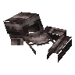
散落的盔甲irons_spellbooks:armor_pile · 方块
 匠师之杖
匠师之杖irons_spellbooks:artificer_cane · 物品自动装填弩
irons_spellbooks:autoloader_crossbow · 物品背叛者徽记
irons_spellbooks:betrayer_signet · 物品
irons_spellbooks:blank_rune · 物品?炽焰术士典籍
irons_spellbooks:blaze_spell_book · 物品
 猩红符文
猩红符文irons_spellbooks:blood_rune · 物品
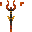
猩红神杖irons_spellbooks:blood_staff · 物品
 猩红升级法球
猩红升级法球irons_spellbooks:blood_upgrade_orb · 物品猩红精华瓶
irons_spellbooks:blood_vial · 物品血腥羊皮纸
irons_spellbooks:bloody_vellum · 物品Bone Key
irons_spellbooks:bone_key · 物品
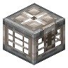
Bone Vaultirons_spellbooks:bone_vault · 方块
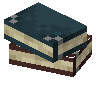
书堆irons_spellbooks:book_stack · 方块?北冰之刃
irons_spellbooks:boreal_blade · 物品
 火盆
火盆irons_spellbooks:brazier · 方块
 灵魂火盆
灵魂火盆irons_spellbooks:brazier_soul · 方块
 速吟之戒
速吟之戒irons_spellbooks:cast_time_ring · 物品施法者茶饮
irons_spellbooks:casters_tea · 物品锁藏之书
irons_spellbooks:chained_book · 物品?编年史
irons_spellbooks:chronicle · 物品
 灰烬源质
灰烬源质irons_spellbooks:cinder_essence · 物品
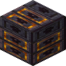
炽魂符文irons_spellbooks:cinderous_soul_rune · 方块
 寻魂烬铃
寻魂烬铃irons_spellbooks:cinderous_soulcaller · 物品
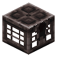
Cinderous Vaultirons_spellbooks:cinderous_vault · 方块?城堡
irons_spellbooks:citadel_map · 物品?笼手阔剑
irons_spellbooks:claymore · 物品普通墨水
irons_spellbooks:common_ink · 物品专注护身符
irons_spellbooks:concentration_amulet · 物品召唤师护符
irons_spellbooks:conjurers_talisman · 物品复效之戒
irons_spellbooks:cooldown_ring · 物品法术冷却缩减符文
irons_spellbooks:cooldown_rune · 物品
法术冷却缩减升级法球irons_spellbooks:cooldown_upgrade_orb · 物品?初学者日志
irons_spellbooks:copper_spell_book · 物品冰霜术士靴子
irons_spellbooks:cryomancer_boots · 物品冰霜术士法袍
irons_spellbooks:cryomancer_chestplate · 物品冰霜术士兜帽
irons_spellbooks:cryomancer_helmet · 物品
 冰霜术士护腿
冰霜术士护腿irons_spellbooks:cryomancer_leggings · 物品
冰霜术士刷怪蛋irons_spellbooks:cryomancer_spawn_egg · 物品?无名头骨
irons_spellbooks:crypt_skull · 物品猩红教徒靴子
irons_spellbooks:cultist_boots · 物品
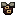
猩红教徒法袍irons_spellbooks:cultist_chestplate · 物品
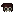
猩红教徒兜帽irons_spellbooks:cultist_helmet · 物品
 猩红教徒护腿
猩红教徒护腿irons_spellbooks:cultist_leggings · 物品?噬血邪典
irons_spellbooks:cursed_doll_spell_book · 物品
死者之王刷怪蛋irons_spellbooks:dead_king_corpse_spawn_egg · 物品Dead King Phylactery
irons_spellbooks:dead_king_phylactery · 物品Dead King Phylactery Shard
irons_spellbooks:dead_king_phylactery_shard · 物品破败钥匙
irons_spellbooks:decrepit_key · 物品?破败战镰
irons_spellbooks:decrepit_scythe · 物品
 深层秘银矿石
深层秘银矿石irons_spellbooks:deepslate_mithril_ore · 方块
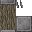
测试魔杖irons_spellbooks:dev_staff · 物品?附魔法术书
irons_spellbooks:diamond_spell_book · 物品
 唱片残片
唱片残片irons_spellbooks:disc_fragment_flame_still_burns · 物品
 神圣珍珠
神圣珍珠irons_spellbooks:divine_pearl · 物品
 神圣灵魂碎片
神圣灵魂碎片irons_spellbooks:divine_soulshard · 物品龙鳞
irons_spellbooks:dragonskin · 物品?龙鳞法术书
irons_spellbooks:dragonskin_spell_book · 物品?德鲁伊巨著
irons_spellbooks:druidic_spell_book · 物品邪术手稿
irons_spellbooks:eldritch_manuscript · 物品?用于学习邪术。
irons_spellbooks:eldritch_manuscript_desc · 物品
 雷霆术士靴子
雷霆术士靴子irons_spellbooks:electromancer_boots · 物品
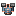
雷霆术士法袍irons_spellbooks:electromancer_chestplate · 物品雷霆术士法帽
irons_spellbooks:electromancer_helmet · 物品
 雷霆术士护腿
雷霆术士护腿irons_spellbooks:electromancer_leggings · 物品方型绿宝石之戒
irons_spellbooks:emerald_stoneplate_ring · 物品守卫护身符
irons_spellbooks:enchanted_ward_amulet · 物品?其上残余的远古魔法能保护你不受失落要塞内的魔法护卫的侵扰。
irons_spellbooks:enchanted_ward_amulet_desc · 物品
 末影符文
末影符文irons_spellbooks:ender_rune · 物品末影升级法球
irons_spellbooks:ender_upgrade_orb · 物品充能核心
irons_spellbooks:energized_core · 物品史诗墨水
irons_spellbooks:epic_ink · 物品闪避药剂
irons_spellbooks:evasion_elixir · 物品
 唤魔符文
唤魔符文irons_spellbooks:evocation_rune · 物品
唤魔升级法球irons_spellbooks:evocation_upgrade_orb · 物品?唤魔者要塞攻击计划
irons_spellbooks:evoker_fort_battle_plans · 物品?唤魔者典籍
irons_spellbooks:evoker_spell_book · 物品驱逐之戒
irons_spellbooks:expulsion_ring · 物品?北极探险路线
irons_spellbooks:failed_arctic_voyage_map · 物品炽焰啤酒
irons_spellbooks:fire_ale · 物品
 炽焰符文
炽焰符文irons_spellbooks:fire_rune · 物品
炽焰升级法球irons_spellbooks:fire_upgrade_orb · 物品
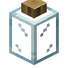
萤火虫罐子irons_spellbooks:firefly_jar · 方块
 焰护之戒
焰护之戒irons_spellbooks:fireward_ring · 物品
 冰封手柄
冰封手柄irons_spellbooks:frosted_helve · 物品冰护之戒
irons_spellbooks:frostward_ring · 物品
 冰封骨头
冰封骨头irons_spellbooks:frozen_bone · 物品卷起的地图
irons_spellbooks:furled_map · 物品
 卷起的远古地图
卷起的远古地图irons_spellbooks:furled_map_ancient · 物品
irons_spellbooks:furled_map_citadelirons_spellbooks:furled_map_citadel · 物品?[%s]
irons_spellbooks:furled_map_descriptor_framing · 物品irons_spellbooks:furled_map_ice_spider_den
irons_spellbooks:furled_map_ice_spider_den · 物品Iron的皇冠
irons_spellbooks:gold_crown · 物品?学徒法术书
irons_spellbooks:gold_spell_book · 物品
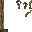
长者手杖irons_spellbooks:graybeard_staff · 物品高级召唤师护符
irons_spellbooks:greater_conjurers_talisman · 物品强效闪避药剂
irons_spellbooks:greater_evasion_elixir · 物品强效治疗药水
irons_spellbooks:greater_healing_potion · 物品强效隐身药剂
irons_spellbooks:greater_invisibility_elixir · 物品
 强效橡肤药剂
强效橡肤药剂irons_spellbooks:greater_oakskin_elixir · 物品?手写发票
irons_spellbooks:handwritten_invoice · 物品沉重环链
irons_spellbooks:heavy_chain_necklace · 物品?地狱战镰
irons_spellbooks:hellrazor · 物品此呼彼应法杖
irons_spellbooks:hither_thither_wand · 物品
 疣猪皮
疣猪皮irons_spellbooks:hogskin · 物品
 神圣符文
神圣符文irons_spellbooks:holy_rune · 物品
神圣升级法球irons_spellbooks:holy_upgrade_orb · 物品
 冰霜符文
冰霜符文irons_spellbooks:ice_rune · 物品?霜印之书
irons_spellbooks:ice_spell_book · 物品?寄染废墟
irons_spellbooks:ice_spider_den_map · 物品冰霜蜘蛛卵
irons_spellbooks:ice_spider_egg · 方块Ice Spider Pheromones
irons_spellbooks:ice_spider_pheromones · 物品
冰霜蜘蛛刷怪蛋irons_spellbooks:ice_spider_spawn_egg · 物品
 冰霜魔杖
冰霜魔杖irons_spellbooks:ice_staff · 物品
冰霜升级法球irons_spellbooks:ice_upgrade_orb · 物品冰霜毒液瓶
irons_spellbooks:ice_venom_vial · 物品冰霜尖牙
irons_spellbooks:icy_fang · 物品?幻术法术书
irons_spellbooks:illusioner_spell_book · 物品?猩红神杖·改进
irons_spellbooks:improved_blood_staff · 物品
 炼狱巫师胸甲
炼狱巫师胸甲irons_spellbooks:infernal_sorcerer_chestplate · 物品
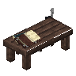
法术抄写台irons_spellbooks:inscription_table · 方块隐身药剂
irons_spellbooks:invisibility_elixir · 物品隐身之戒
irons_spellbooks:invisibility_ring · 物品?铁箍书卷
irons_spellbooks:iron_spell_book · 物品?破败焰形剑
irons_spellbooks:keeper_flamberge · 物品
远古骑士刷怪蛋irons_spellbooks:keeper_spawn_egg · 物品
 传说墨水
传说墨水irons_spellbooks:legendary_ink · 物品?军团焰形剑
irons_spellbooks:legionnaire_flamberge · 物品小型法术槽升级
irons_spellbooks:lesser_spell_slot_upgrade · 物品
 雷电瓶
雷电瓶irons_spellbooks:lightning_bottle · 物品雷霆之杖
irons_spellbooks:lightning_rod · 物品
 雷霆符文
雷霆符文irons_spellbooks:lightning_rune · 物品
雷霆升级法球irons_spellbooks:lightning_upgrade_orb · 物品
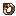
潜伏之戒irons_spellbooks:lurker_ring · 物品?狩魔人之剑
irons_spellbooks:magehunter · 物品
 奥术布匹
奥术布匹irons_spellbooks:magic_cloth · 物品奥术之戒
irons_spellbooks:mana_ring · 物品
最大法力值升级法球irons_spellbooks:mana_upgrade_orb · 物品?苦痛刺剑
irons_spellbooks:misery · 物品
 秘银锭
秘银锭irons_spellbooks:mithril_ingot · 物品
 秘银矿石
秘银矿石irons_spellbooks:mithril_ore · 方块
 秘银碎片
秘银碎片irons_spellbooks:mithril_scrap · 物品
 秘银织物
秘银织物irons_spellbooks:mithril_weave · 物品音乐唱片
irons_spellbooks:music_disc_dead_king_lullaby · 物品
 音乐唱片
音乐唱片irons_spellbooks:music_disc_flame_still_burns · 物品Music Disc
irons_spellbooks:music_disc_whispers_of_ice · 物品
 自然符文
自然符文irons_spellbooks:nature_rune · 物品
自然升级法球irons_spellbooks:nature_upgrade_orb · 物品
亡灵术士刷怪蛋irons_spellbooks:necromancer_spawn_egg · 物品?亡灵律典
irons_spellbooks:necronomicon_spell_book · 物品
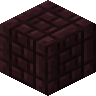
下界砖柱irons_spellbooks:nether_brick_pillar · 方块下界合金战法靴子
irons_spellbooks:netherite_mage_boots · 物品下界合金战法袍
irons_spellbooks:netherite_mage_chestplate · 物品下界合金战法帽
irons_spellbooks:netherite_mage_helmet · 物品
 下界合金战法护腿
下界合金战法护腿irons_spellbooks:netherite_mage_leggings · 物品?远古法典
irons_spellbooks:netherite_spell_book · 物品下界药剂
irons_spellbooks:netherward_tincture · 物品
橡肤药剂irons_spellbooks:oakskin_elixir · 物品光明使者胸甲
irons_spellbooks:paladin_chestplate · 物品
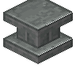
基座irons_spellbooks:pedestal · 方块
 永冻碎片
永冻碎片irons_spellbooks:permafrost_shard · 物品
 瘟疫术士靴子
瘟疫术士靴子irons_spellbooks:plagued_boots · 物品
 瘟疫术士法袍
瘟疫术士法袍irons_spellbooks:plagued_chestplate · 物品
 瘟疫术士兜帽
瘟疫术士兜帽irons_spellbooks:plagued_helmet · 物品
 瘟疫术士护腿
瘟疫术士护腿irons_spellbooks:plagued_leggings · 物品
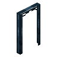
口袋维度传送门方块irons_spellbooks:pocket_dimension_portal_frame · 方块
 毒护之戒
毒护之戒irons_spellbooks:poisonward_ring · 物品
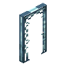
传送门框架irons_spellbooks:portal_frame · 方块牧师靴子
irons_spellbooks:priest_boots · 物品牧师法袍
irons_spellbooks:priest_chestplate · 物品牧师兜帽
irons_spellbooks:priest_helmet · 物品
 牧师护腿
牧师护腿irons_spellbooks:priest_leggings · 物品
牧师刷怪蛋irons_spellbooks:priest_spawn_egg · 物品法术抗性符文
irons_spellbooks:protection_rune · 物品
法术抗性升级法球irons_spellbooks:protection_upgrade_orb · 物品惊悚南瓜靴子
irons_spellbooks:pumpkin_boots · 物品惊悚南瓜法袍
irons_spellbooks:pumpkin_chestplate · 物品惊悚南瓜法帽
irons_spellbooks:pumpkin_helmet · 物品惊悚南瓜护腿
irons_spellbooks:pumpkin_leggings · 物品
 炽金锭
炽金锭irons_spellbooks:pyrium_ingot · 物品?炽金魔杖
irons_spellbooks:pyrium_staff · 物品炽焰术士靴子
irons_spellbooks:pyromancer_boots · 物品
 炽焰术士法袍
炽焰术士法袍irons_spellbooks:pyromancer_chestplate · 物品炽焰术士法帽
irons_spellbooks:pyromancer_helmet · 物品
 炽焰术士护腿
炽焰术士护腿irons_spellbooks:pyromancer_leggings · 物品
炽焰术士刷怪蛋irons_spellbooks:pyromancer_spawn_egg · 物品稀有墨水
irons_spellbooks:rare_ink · 物品粗秘银
irons_spellbooks:raw_mithril · 物品?破败法术书
irons_spellbooks:rotten_spell_book · 物品颓残之书
irons_spellbooks:ruined_book · 物品
 法术卷轴
法术卷轴irons_spellbooks:scroll · 物品
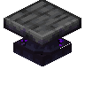
卷轴撰写台irons_spellbooks:scroll_forge · 方块?神秘卷轴袋
irons_spellbooks:scroll_pouch · 物品暗影行者靴子
irons_spellbooks:shadowwalker_boots · 物品暗影行者胸甲
irons_spellbooks:shadowwalker_chestplate · 物品暗影行者头盔
irons_spellbooks:shadowwalker_helmet · 物品
 暗影行者护腿
暗影行者护腿irons_spellbooks:shadowwalker_leggings · 物品
 忏悔石
忏悔石irons_spellbooks:shriving_stone · 物品?在锻造台中使用，移除装备的升级。
irons_spellbooks:shriving_stone_desc · 物品银戒
irons_spellbooks:silver_ring · 物品迅捷之靴
irons_spellbooks:speed_boots · 物品法术书
irons_spellbooks:spell_book · 物品?可扩容魔导书槽位，最多扩容至%s个。
irons_spellbooks:spell_slot_upgrade_desc · 物品?破法者
irons_spellbooks:spellbreaker · 物品九神魔杖
irons_spellbooks:staff_of_the_nines · 物品?黯淡皇冠
irons_spellbooks:tarnished_crown · 物品黯淡皇冠
irons_spellbooks:tarnished_helmet · 物品传送护身符
irons_spellbooks:teleportation_amulet · 物品
 永恒浆液
永恒浆液irons_spellbooks:timeless_slurry · 物品Tincture of Forgetfulness
irons_spellbooks:tincture_of_forgetfulness · 物品?已翻译的研究日志
irons_spellbooks:translated_archevoker_log · 物品?求真者
irons_spellbooks:truthseeker · 物品?暮光飓风
irons_spellbooks:twilight_gale · 物品
 Tyros Statue
Tyros Statueirons_spellbooks:tyros_statue · 方块
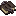
Unchained Bookirons_spellbooks:unchained_book · 物品卓越墨水
irons_spellbooks:uncommon_ink · 物品
空白升级法球irons_spellbooks:upgrade_orb · 物品?村民圣典
irons_spellbooks:villager_spell_book · 物品明视之戒
irons_spellbooks:visibility_ring · 物品
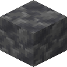
虚空石irons_spellbooks:voidstone · 方块
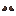
流浪法师靴子irons_spellbooks:wandering_magician_boots · 物品流浪法师法袍
irons_spellbooks:wandering_magician_chestplate · 物品流浪法师兜帽
irons_spellbooks:wandering_magician_helmet · 物品流浪法师裤子
irons_spellbooks:wandering_magician_leggings · 物品归途指南针
irons_spellbooks:wayward_compass · 物品?被囚禁于其中的灵魂为你指明了它家的方向。
irons_spellbooks:wayward_compass_desc · 物品
 武器部件
武器部件irons_spellbooks:weapon_parts · 物品Wicked Bone Ring
irons_spellbooks:wicked_bone_ring · 物品无用之书
irons_spellbooks:wimpy_spell_book · 物品
 智慧木书架
智慧木书架irons_spellbooks:wisewood_bookshelf · 方块智慧木雕纹书架
irons_spellbooks:wisewood_chiseled_bookshelf · 方块
 巫师靴子
巫师靴子irons_spellbooks:wizard_boots · 物品
 巫师法袍
巫师法袍irons_spellbooks:wizard_chestplate · 物品irons_spellbooks:wizard_hat
irons_spellbooks:wizard_hat · 物品
 巫师头盔
巫师头盔irons_spellbooks:wizard_helmet · 物品
 巫师护腿
巫师护腿irons_spellbooks:wizard_leggings · 物品